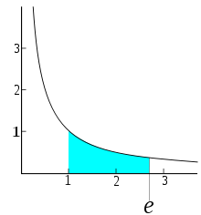
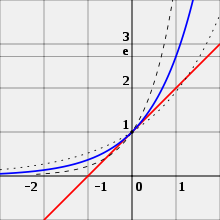
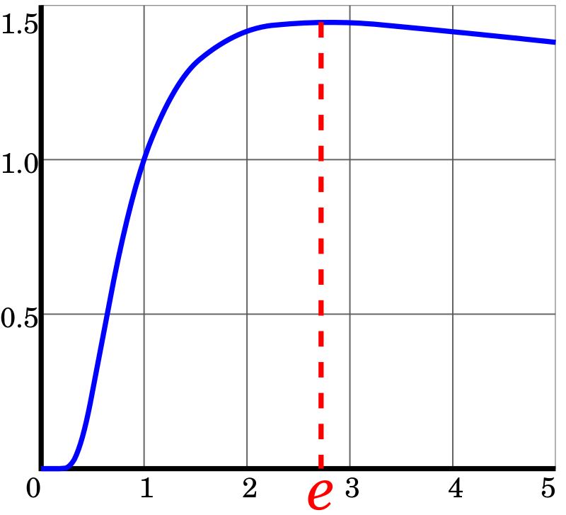

e —
основание натурального логарифма, математическая константа, иррациональное и трансцендентное число. Приблизительно равно 2,71828. Иногда число e называют числом Эйлера или числом Непера. Обозначается строчной латинской буквой «e». Число e играет важную роль в дифференциальном и интегральном исчислении, а также во многих других разделах математики. Поскольку функция экспоненты е^x интегрируется и дифференцируется «сама в себя», логарифмы именно по основанию e принимаются как натуральные.
Немного интересных фактов про число e:
• Площадь области под графиком y = 1/x на отрезке 1 <= x <= e равна 1
• e — это такое число, для которого производная (тангенс угла наклона касательной) показательной функции f (x) = ex (синяя кривая) в точке x = 0 равна 1 (касательная - красная линия). Для сравнения показаны функция f (x) = 2x (пунктирная кривая) и f (x) = 4x (штриховая кривая); производные которых не равны 1 при x = 0.
• Также по данной ссылке вы можете посмотреть доказательство ирациональности числа e
• Максимум функции x^(1/x) достигается при x=e.
